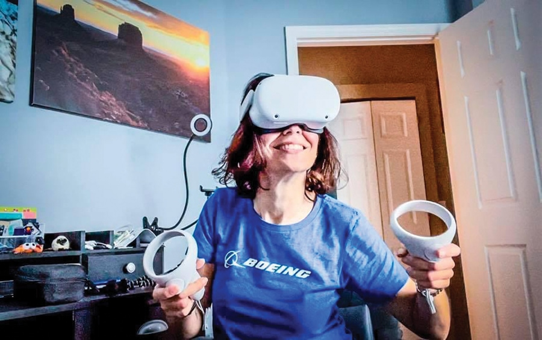

One of the best things VR can do is it's compatibility, Special ed kids can use vr to increase attention span and ease communication. It can also be used to provide sensory stimulation for students with sensory processing disorders, for example, providing a VR environment for students with visual impairments, or haptic feedback. Handicapped people can go to places were the couldn’t go, An Author who uses an power wheelchair was able to use their VR headset to take virtual walks in switzerland.(New mobility)

"He explained that a friend of his has an elderly grandmother living in Germany. Using virtual reality, he was able to keep in touch with her regularly — specifically, to go on virtual walks with her through the village where she grew up in Switzerland."